Abstract
Recent discussions of AI existential risk have increasingly expanded beyond catastrophic failure scenarios toward systemic pathways through which advanced AI systems may gradually erode human influence over economic, social, and institutional processes. Among these pathways, Gradual Disempowerment (GD) has emerged as a framework describing how incremental capability improvements can progressively reduce human participation in decision-making and resource allocation without requiring any singular catastrophic event.
This paper proposes an operational framework for measuring gradual disempowerment using economic indicators derived from the Anthropic Economic Index (AEI). Building on recent work in AI safety, economic exposure measurement, and production theory, we construct a multi-layer model linking AI participation, economic primitives, production factors, human economic power, and verification-economy dynamics. The framework combines system-dynamics reasoning, Cobb–Douglas production models, and attractor-based diagnostics to estimate how changes in AI capability affect human economic centrality. The framework provides a quantitative bridge between AI-safety theory, economic measurement, and complex-systems analysis, offering a potential foundation for future monitoring of gradual disempowerment dynamics.
Keywords Gradual Disempowerment · AI Safety · Anthropic Economic Index · Economic Primitives · Human Economic Power · Verification Economy · Complex Systems · System Dynamics
Key result
\(\hat\lambda = 1.57\)
Under the original construction of the inputs, all three occupation groups move sharply away from the Human Economic Power curve in September 2025 (Mahalanobis distance up to 7.0) and then converge. The excursion is produced by how the inputs were built, not by the sectors.
\(\hat\lambda = 4.71\)
On harmonised, occupation-coded inputs across five AEI releases, the groups hold stable positions on the curve: distance stays at or below 1.26 and no excursion is detected.
Null result
Diagnostics of gradual disempowerment are only as informative as the comparability of the measurements they are built on. The contribution is the measurement framework and the input requirements it makes explicit.
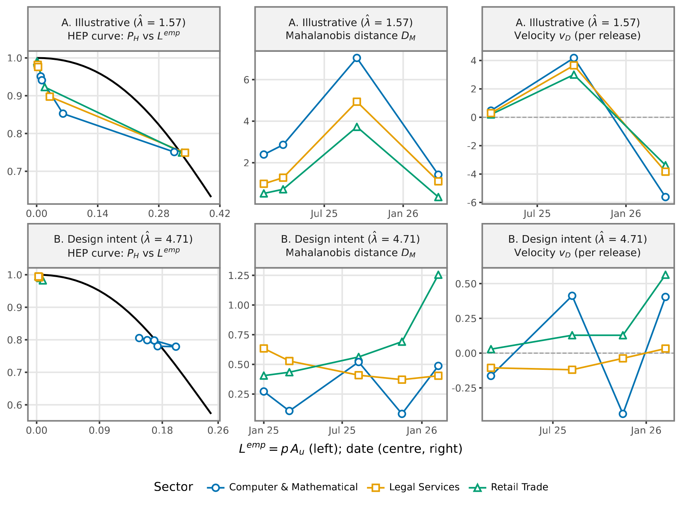
Framework
Scope within the gradual disempowerment model
Gradual disempowerment unfolds across three interacting societal systems: the economy, culture, and states. This work measures the economic system and the one link through which culture supplies it (consumer habits, the supply of labour, and the types of economic subjects). Human Economic Power is therefore an indicator of disempowerment in one system, not of gradual disempowerment as a whole.

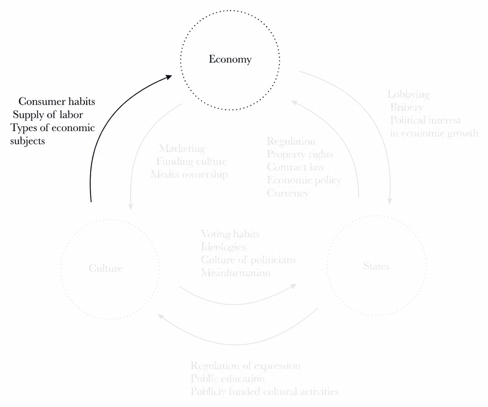

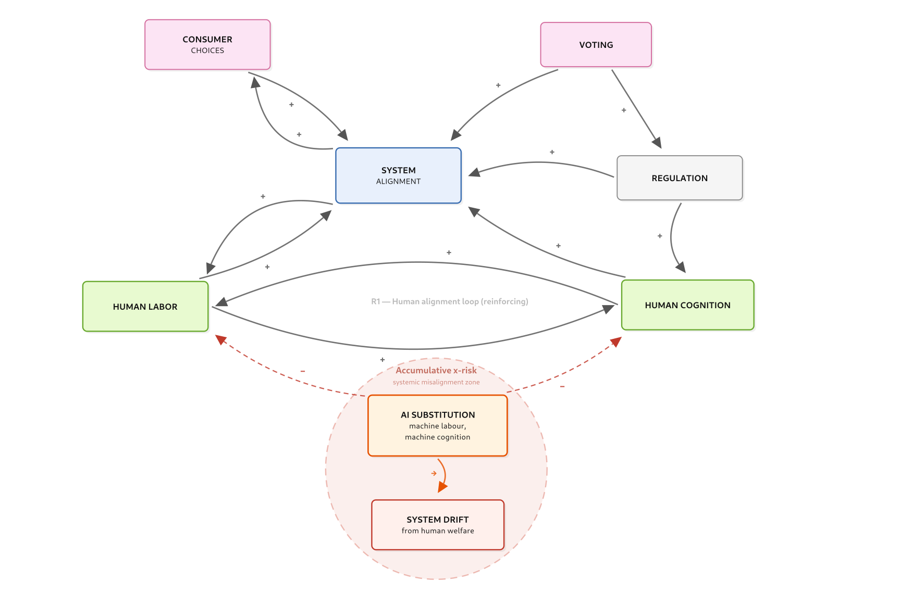
The human-centred core
A human-centred economy is one in which human productive capability, purchasing power, and demand remain central determinants of production. Its stock-and-flow core links Human Labor Capacity, Purchase Power, Market Activated Desire, and Human Economic Centrality; Human Economic Power, Agency, and Centrality are higher-level indicators emerging from this structure.

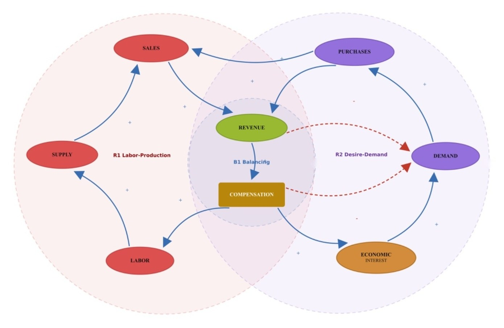

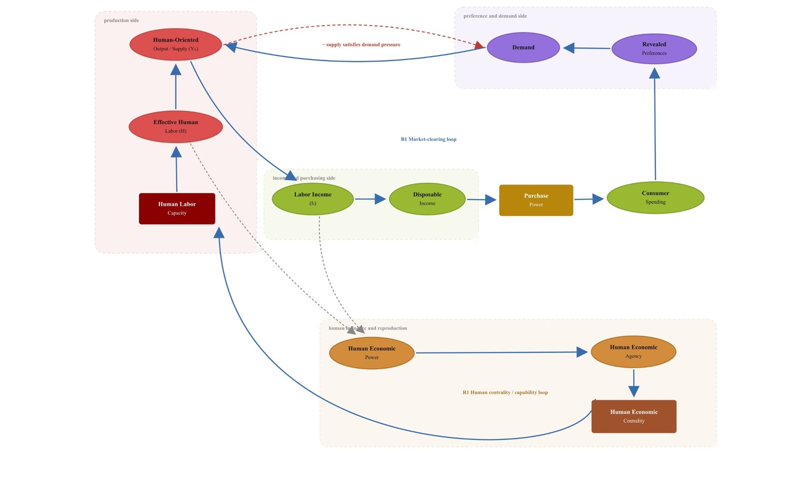

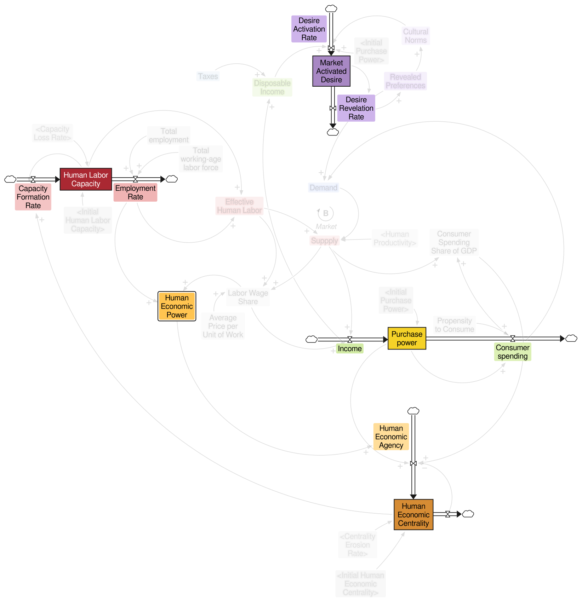

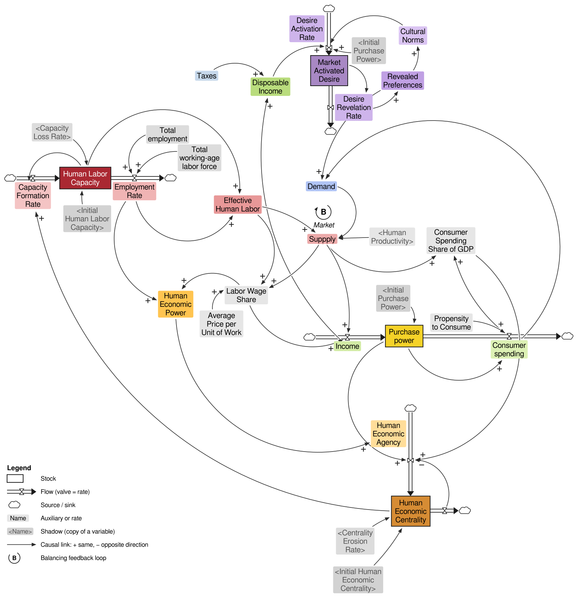
The wider AI-mediated economy
The causal loop diagram below places a simplified version of the core in an AI-mediated (AGI) economy. It is conceptual: stocks and flows show where quantities accumulate, but the differential equations are not formalised. It links the core stocks to an external AI Labor Capacity stock through three mechanisms: automation and augmentation (Agrawal et al., 2025), the verification economy and the reinforcing missing-junior loop (Catalini et al., 2026), with human economic agency and centrality read after Stiefenhofer (2025). Integrating this diagram with the operational core into one coherent model is the step towards a full simulation.
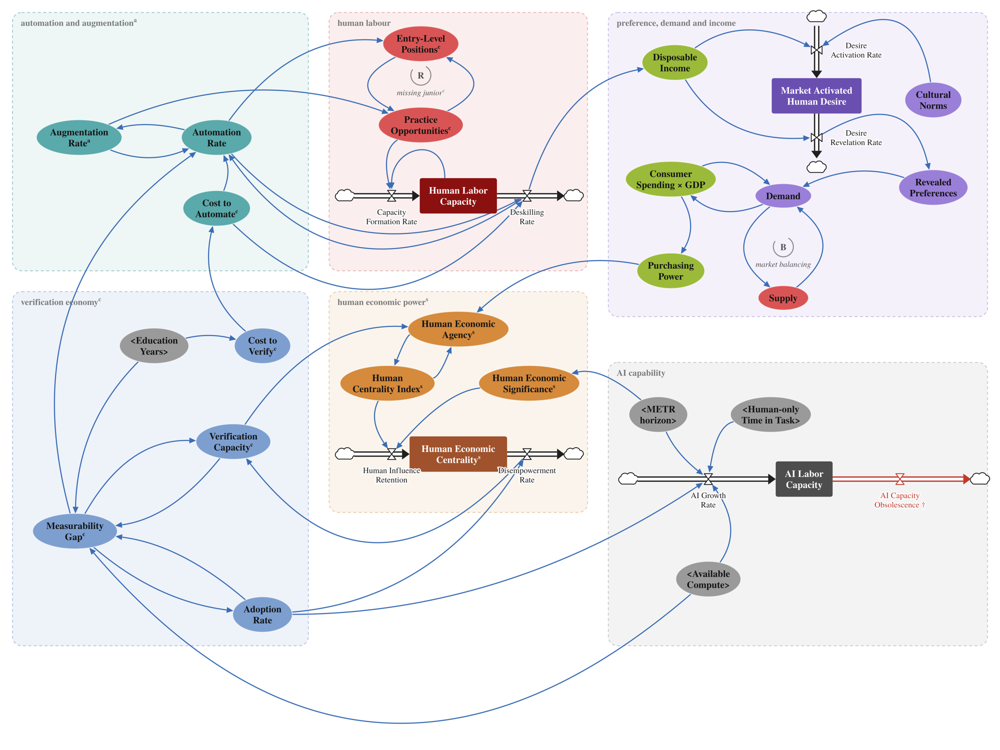
Measurement pipeline
AEI releases are turned into economic primitives (penetration, interaction weights, task time), then into task complexity and frontier accessibility, then into automation, augmentation, and verification production factors. These yield empirical Human Economic Power, which is compared with a theoretical transition curve.
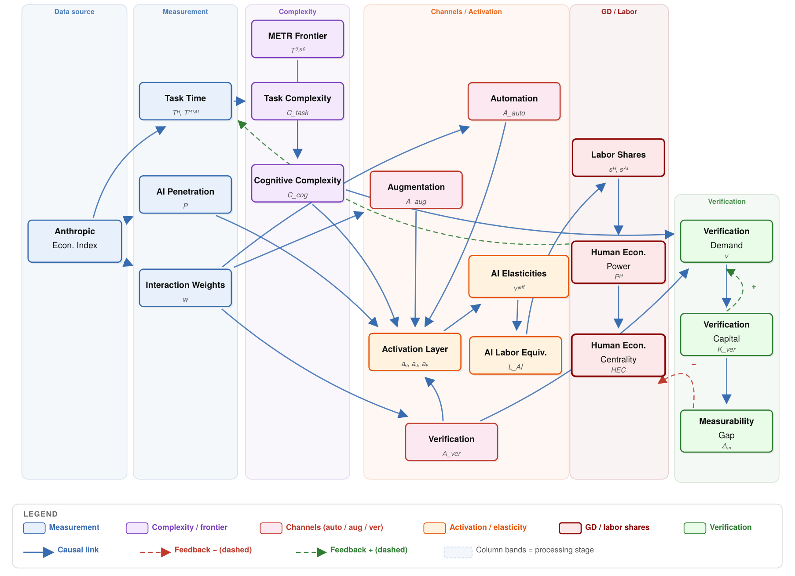
Effective AI participation
\[ L^{emp}_{s,t} = p_{s,t}\,A_{u,t} \]Penetration \(p\) times autonomy \(A_u\), the AEI automation share (directive + feedback loop).
Empirical Human Economic Power
\[ P^{emp}_{H} = \frac{H}{H + K^{eff}_{AI}} \]Effective human labour against effective AI capital, gated by frontier accessibility.
Theoretical HEP curve
\[ P_H(L;\lambda)=\frac{e^{-\lambda L}(1-L)}{e^{-\lambda L}(1-L)+\left(1-e^{-\lambda L}\right)L} \]\(\lambda\) fitted by least squares over all sector–release observations.
Attractor diagnostics
\[ \begin{gathered} D_M=\sqrt{(z-z^{*})^{\top}\Sigma^{-1}(z-z^{*})} \\ v_D=\Delta D_M,\qquad a_D=\Delta v_D \end{gathered} \]Nearest-curve Mahalanobis distance, with covariance from the baseline releases, and its velocity and acceleration.
Results
On harmonised inputs, Computer & Mathematical occupations account for 32–40% of classified Claude.ai conversations and hold Human Economic Power between 0.78 and 0.81; Legal and Retail stay above 0.98. The largest sustained movement is a gradual rise in distance for Retail Sales from a very low usage base.

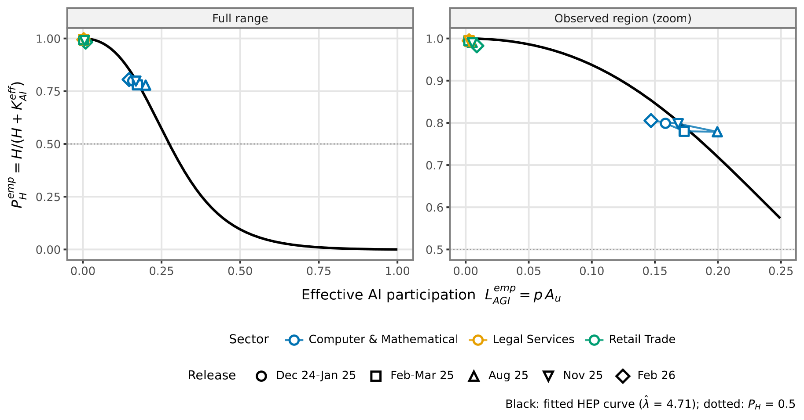

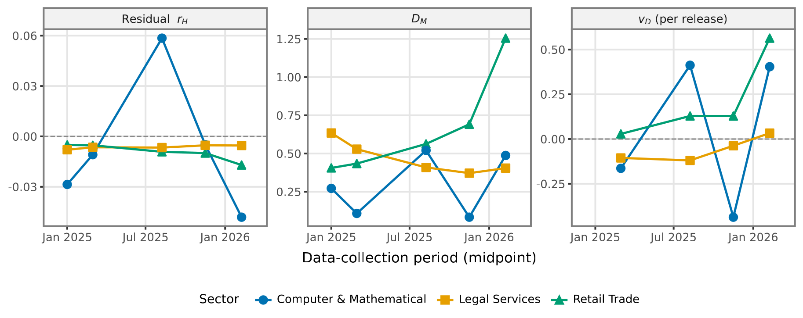

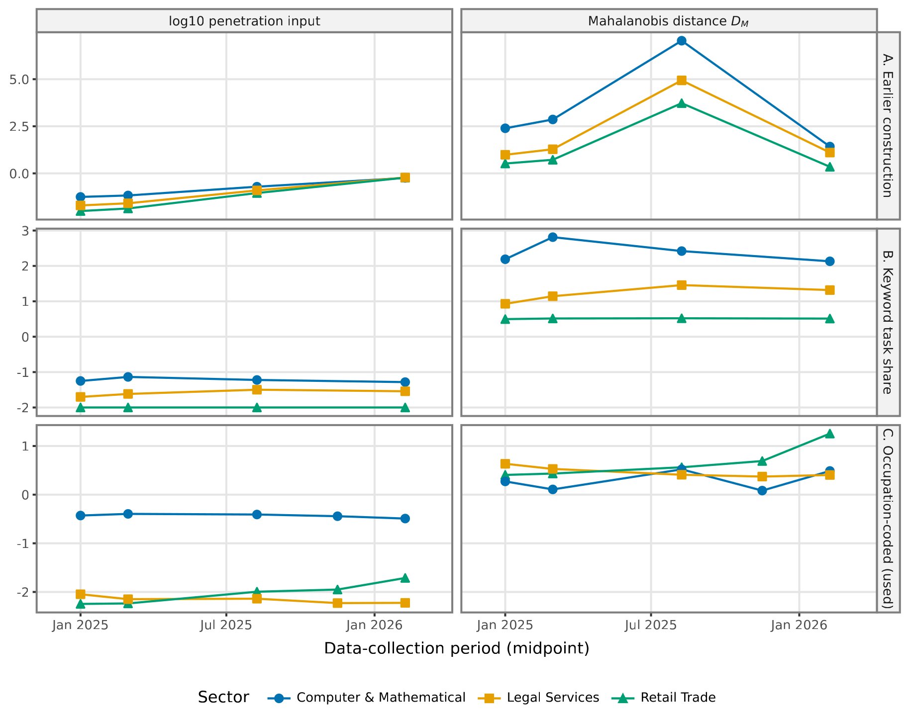

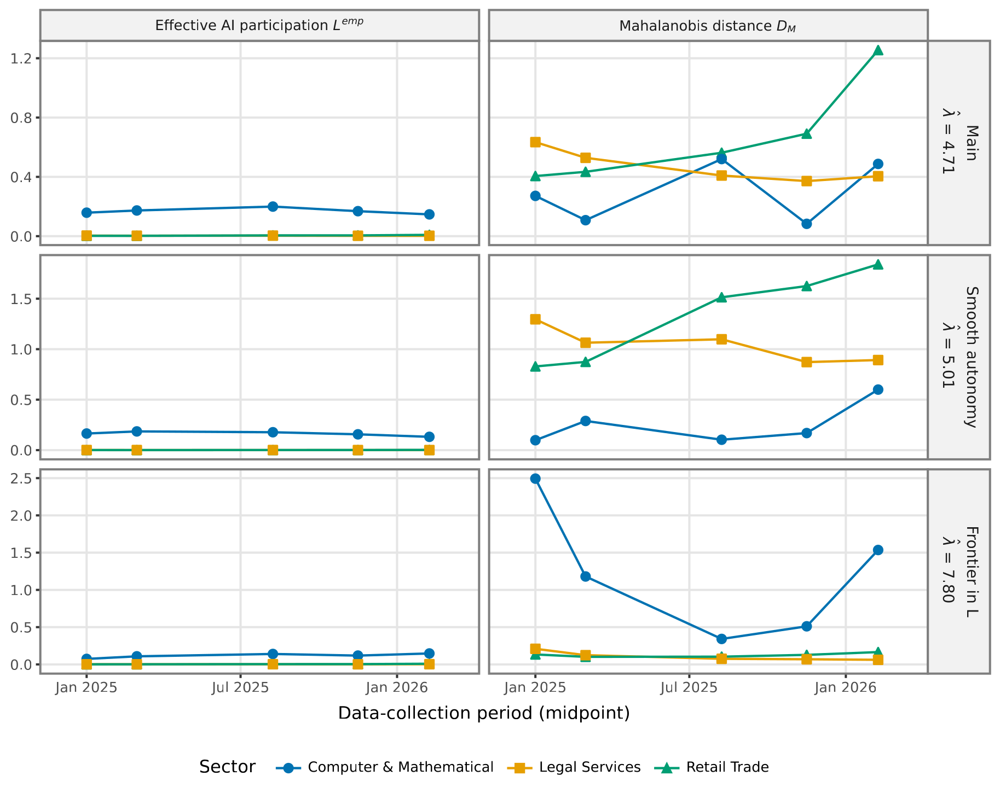
Limitations and next steps
- Few ordered observations: five AEI releases and three occupation groups.
- Penetration is a usage-composition measure of Claude.ai conversations; it cannot register economy-wide growth in adoption.
- Interaction weights and autonomy are release-level, not occupation-specific.
- The AEI records no output, capital, or hours; these are allocated from presupposed national aggregates, so production elasticities are not identified.
- METR horizons cover Anthropic models only.
- The framework measures divergence from expected dynamics, not gradual disempowerment directly.
Next steps: standardise AEI inputs across releases, link the index to external sector-level accounts, and formalise the causal loop diagram as a stock-and-flow simulation whose trajectories can be compared with the theoretical curve and with releases not used in calibration.
Code and source access
The simulation notebook, analysis scripts, LaTeX source, and derived data are kept in a private repository. Access, for viewing or cloning, is granted on request.
Request access on GitHubThe request form asks for your GitHub username and intended use. Requests are visible on the public issue tracker, so please do not include private information.
Cite
@misc{oczkowski2026gd,
title = {Measuring Gradual Disempowerment: From Economic
Primitives to Human Economic Power},
author = {Oczkowski, Pawel},
year = {2026},
note = {Working paper},
url = {https://nirankusha.github.io/measuring-gd/}
}AI use
Claude (Anthropic) was used as an assistant for analysis code, reproduction runs, data retrieval, figures, consistency checks, and text editing, under the author's direction. The research question, framework, model, and conclusions are the author's, who reviewed all outputs and is responsible for the paper. The empirical analysis relies on the Anthropic Economic Index; the assistant is a product of the same company. The full statement is in the paper.